Shanghai Fengxian “Three-Body” 13-Meter Battleship installation
Gallery views, structural details and workshop assembly of the 13-meter battleship installation.
Click an image to enlarge


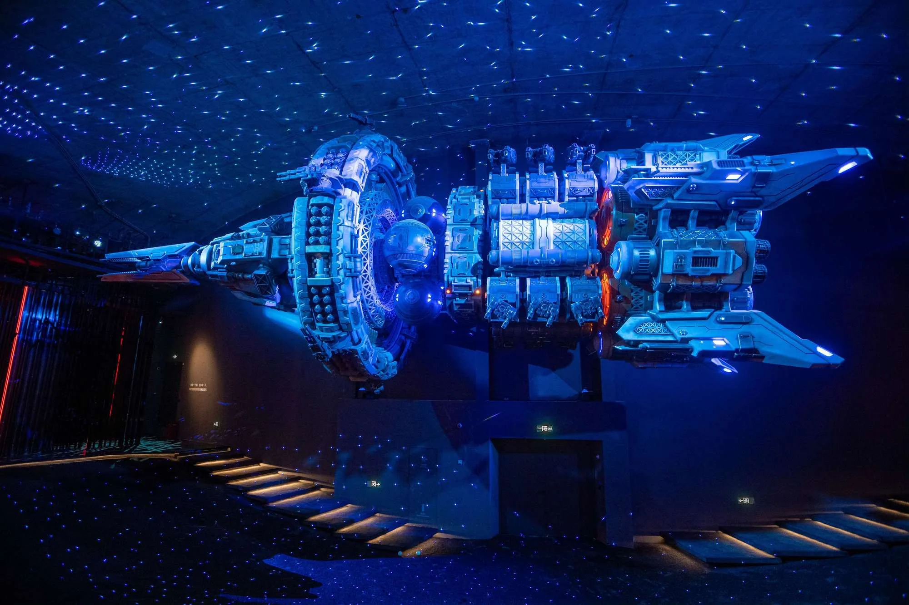

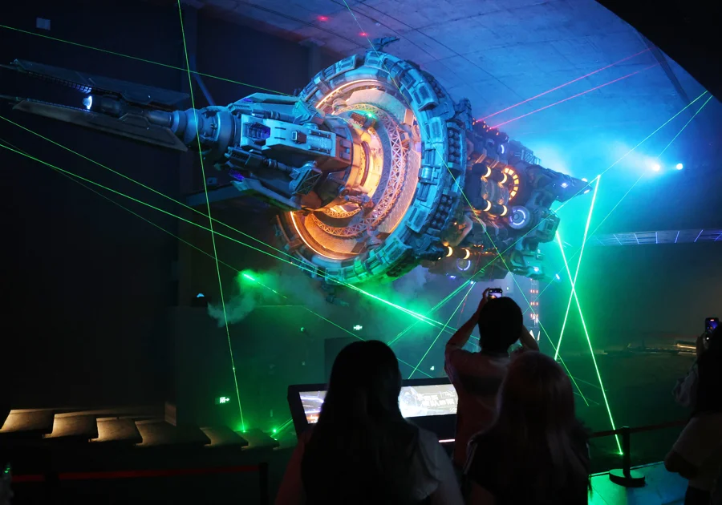

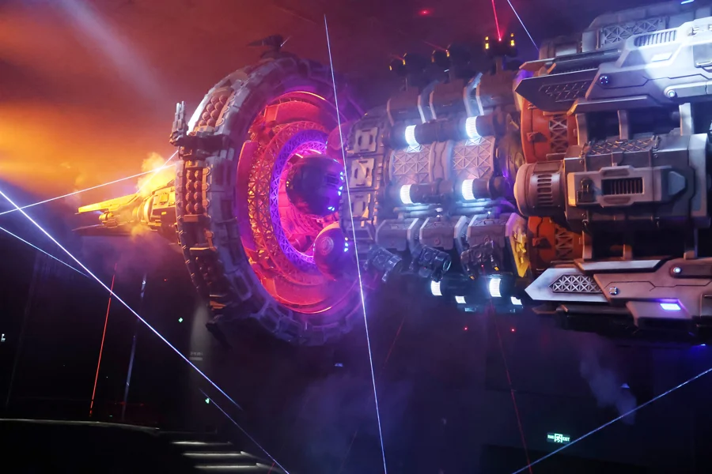

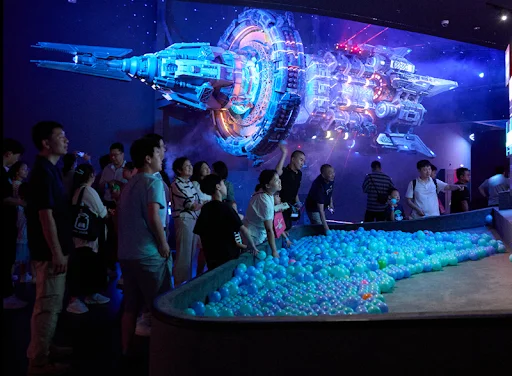

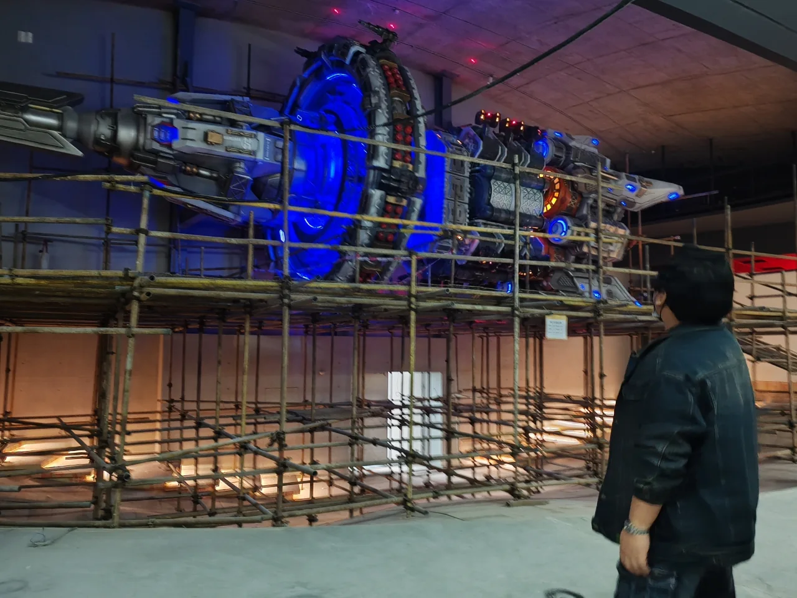

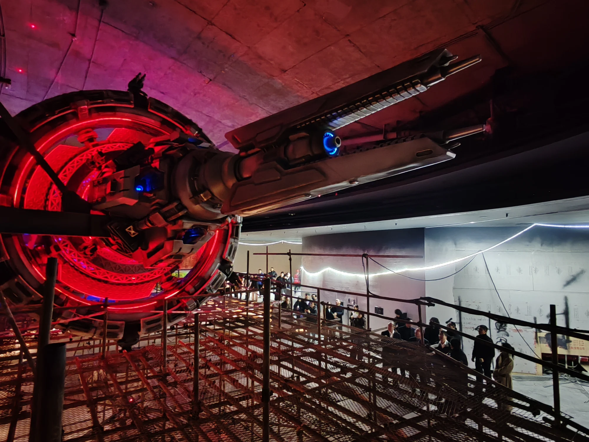

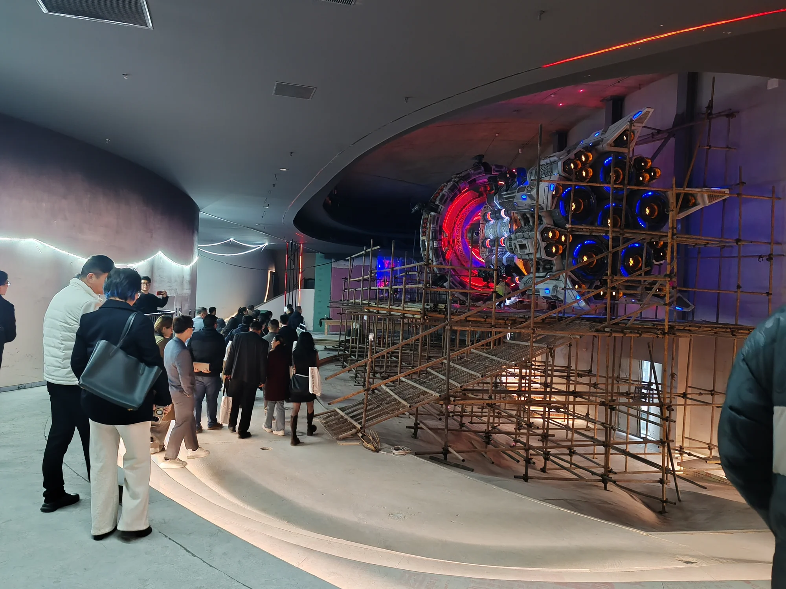

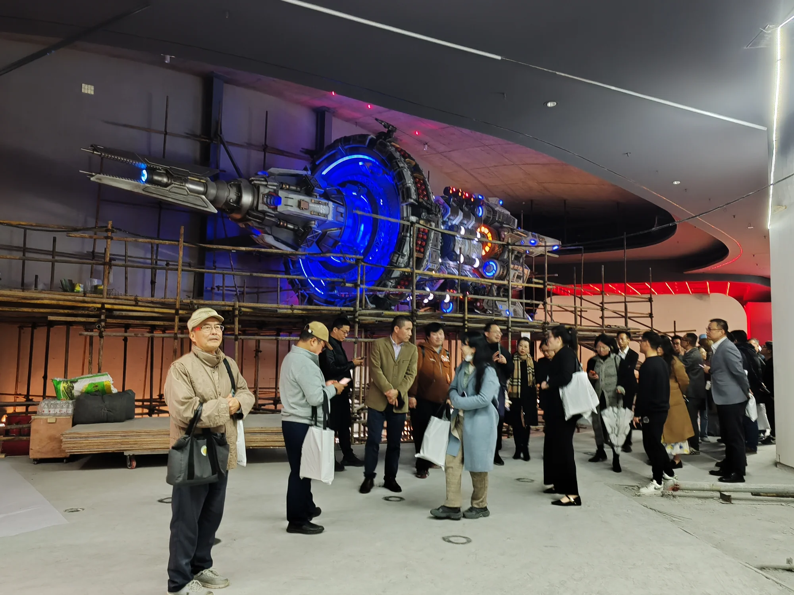

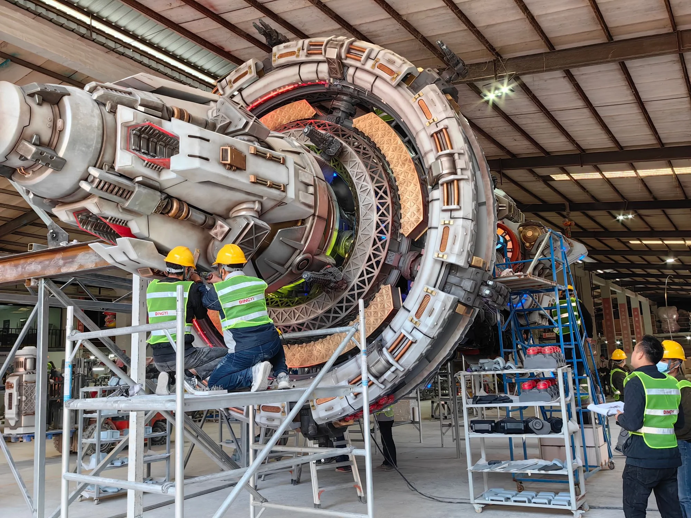

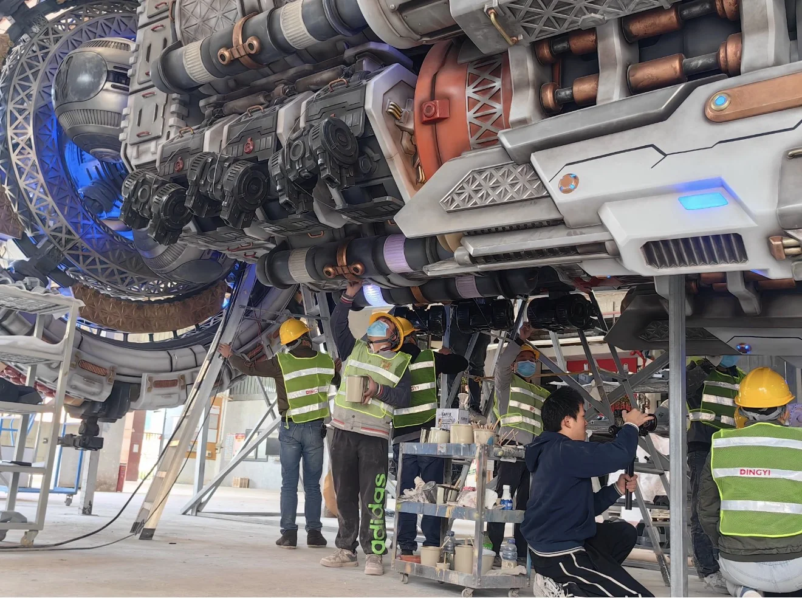

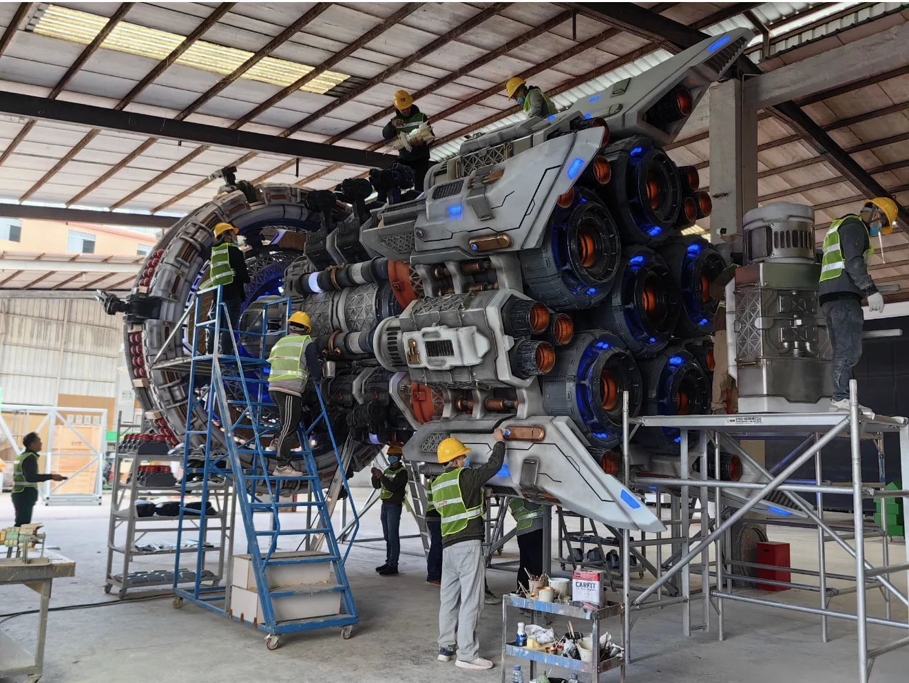

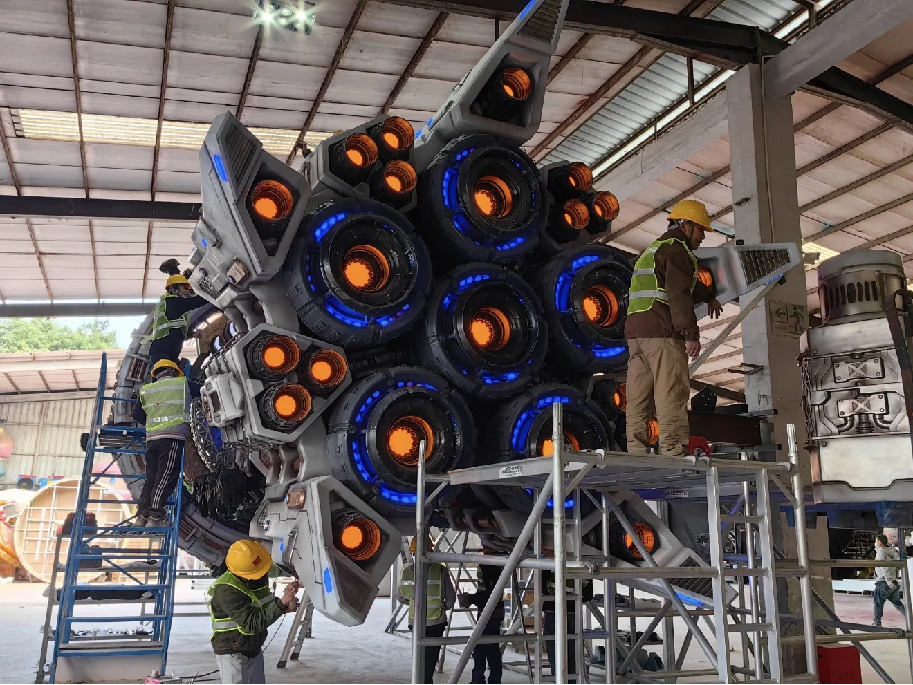

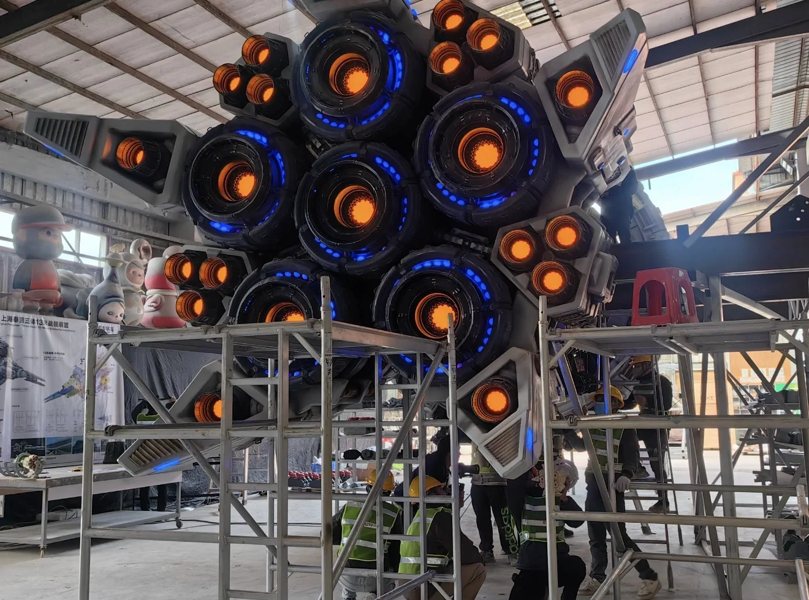

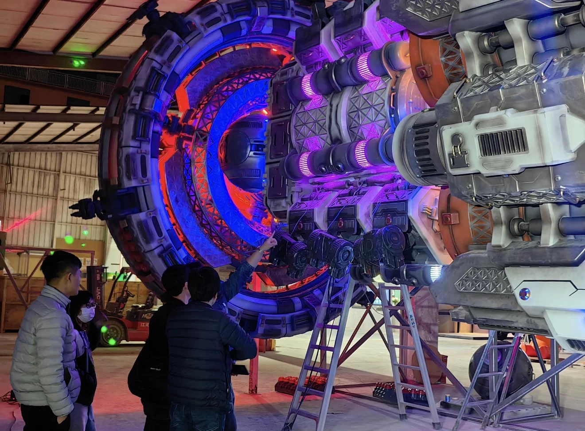